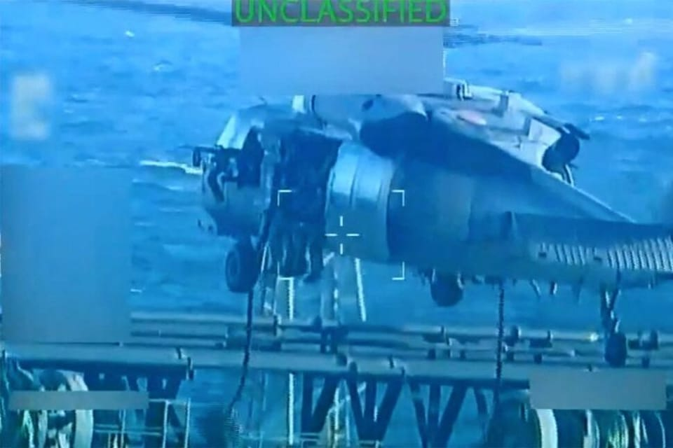

世界苦茶12月12日新闻 | 38条 | 马兴瑞继续失踪

马兴瑞继续失踪 | 台湾副外长秘访以色列 | 泰国解散下议院将进行大选 | 美国日本联合巡航展示武力 | ChatGPT推出GPT-5.2
苦茶数据
美元兑人民币：7.05（昨日7.05，前日7.06）
美元兑日元：155.73（昨日155.19，前日156.71）
上证指数：3871（昨日3873，前日3900）
标普500指数：6901（昨日6864，前日6840）
比特币：92281（昨日89995，前日92390）
布伦特原油：61.67（昨日60.99，前日62.19）
中国新闻
• 前航天少帅马兴瑞继续“失踪”。
中国一年一度的中央经济工作会议星期四闭幕，中共政治局委员马兴瑞没有现身。这是他第二次被确认在重要高层会议上缺席，无形中证实了过去两个星期传得沸沸扬扬的“出事”传闻。马兴瑞是在今年7月突然被官宣不再兼任新疆维吾尔自治区党委书记，由中央统战部副部长陈小江接替。马兴瑞是在2021年开始主政新疆，在第一个任期中途就无缘由被撤换，这与惯例不符，也立即引起了一些猜测。
• 中国再次敦促公民近期避免前往日本。
中国再次敦促公民近期避免前往日本 2025年12月11日11月中旬，中国曾以日本社会治安以及“日本领导人公然发表涉台露骨挑衅言论”为由，提醒中国公民避免前往日本。这回提到的原因是日本近期连续发生多起地震。广告 中国外交部12月11日再次提醒中国公民近期避免前往日本。在当天的记者会上，日本电视台记者提问，中国外交部发布提醒敦促中国公民暂勿前往日本，原因是发生了地震，请问这是否是针对日本首相发表涉台言论而采取的反制措施之一？外交部发言人郭嘉昆回答道，日本近期连续发生多起地震，已造成多人受伤，日本多地已观测到海啸，超10万人接到避难指示。日本有关部门公告称，后续会有更大地震。上月中旬。
• 议员称，赫格塞斯将美中关系描述为“G2”是“有问题”的。
众议院议员拉贾·克里希纳穆尔蒂在致国防部长的一封信中警告称，国防部长皮特·赫格塞思将美中关系称为“G2”伙伴关系“深具问题”。信中写道：“该术语带有深刻的问题含义，将美国与中华人民共和国描绘为地位平等且主要合作的两大强权，共同决定全球事务，同时将美国的民主盟友与伙伴边缘化。”他还写道：“现实中，中国共产党将美国视为其主要战略对手，并正在不懈努力取代美国成为世界上最强大、最有影响力的国家。
• 班禅喇嘛表示，转世必须依照中国法律进行，并须经北京认可。
藏传佛教第二号人物显然在提及流亡灵童达赖喇嘛的继承问题。班禅喇嘛表示，转世必须遵循中国法律并获得北京认可，此话显然在指达赖喇嘛的转世继承。周一在日喀则举行的一个官方座谈会上，班禅喇嘛——在藏传佛教中仅次于达赖喇嘛的第二号人物——表示，转世的“活佛”必须在中国境内认定，并由中央政府批准。他补充说，这一过程必须“不得受境外任何组织或个人的干涉或控制”。班禅喇嘛还表示，认定转世“活佛”的程序必须依法进行。
印太新闻
**• 泰国国王哇集拉隆功已批准解散国会下议院，以举行新的全国大选。 **
根据谕令，总理阿努廷提出，本届政府系由多个政党组成的少数派政府，在国家面临经济、社会、政治、国际关系和全球地缘政治等多重不确定性挑战之际，加之泰国与柬埔寨边境动荡不安，泰国国内政治局势面临重重困难，导致政府无法持续、有效、稳定地运作国家事务，妥善解决之道就是解散国会下议院以重新举行大选。谕令指出，国王哇集拉隆功已批准阿努廷上述请求，国会下议院解散自谕令公布起生效，下议院选举日期由选举委员会另行公布，但须在谕令生效后45日至60日之内。
• 台湾副外长据报秘访以色列寻求防务合作。
消息人士透露，台湾寻求与中东国家以色列展开防务合作之际，台湾外交部政务次长吴志中近期秘密访问了以色列。路透社星期四引述三名消息人士报道称，吴志中最近几周访问了以色列，其中两人指访问时间是在12月。上述三名人士都拒绝透露吴志中此行会见对象或讨论内容，包括是否触及台湾总统赖清德今年10月宣布要打造的防空系统“台湾之盾”。赖清德当时称，台湾之盾部分仿效以色列防空系统打造。分析指出，台湾外交高层前往以色列极为罕见。2023年哈马斯袭击以色列南部，在随后爆发的加沙战争中，台湾力挺以色列，双方互动持续提升。
• 质疑法庭直播变录影带后播 柯文哲：司法院带头违法。
台湾民众党创党主席柯文哲涉及京华城等案，星期四准备召开辩论程序。柯文哲当场质疑司法院制订的办法将法庭直播变成宣判后播放，且播放内容不包括被告最后的意见陈述，事后并在脸书指控司法院“带头违法”。柯文哲因京华城和政治献金案，被台北地检署以收贿、图利、侵占和背信起诉，求刑28年六个月。台北地方法院规划星期四起两天内提示相关卷证，准备辩论程序。立法院6月三读通过《法院组织法》第90条修正案，规定“于公开行诉讼之言词辩论及裁判之宣示所为之录音、录影，依当事人声请或依职权裁定以适当方式实施公开播送”。柯文哲日前声请法庭全程直播，但台北地院合议庭仅裁准在全案审结宣判后五日内。
• 在东京与北京交恶之际，美国和日本展示军力以示威慑。
自上月日中爆发激烈争端以来，美日两国首次联合举行军力展示，美国派出具备核打击能力的轰炸机，并由日本战斗机在日本海上空伴飞。日本防卫省联合参谋本部称，此次演习包括两架美国B-52战略轰炸机和六架日本F-35与F-15战斗机。日本联合参谋本部在一份声明中表示：“此次双边演习重申了日美在不容忍以武力单方面改变现状方面的坚强意志。”——日本常用此类措辞指代台湾的地位，台湾是一个由自身治理却被中国声称为其领土的一座岛屿。此前周二，中国与俄罗斯也曾联合出动战略轰炸机和战斗机演练。
• 孟加拉国将在二月举行自2024年大规模起义以来的首次全国大选。
孟加拉国首席选举专员周四表示，该国下一次全国大选将于2月12日举行，确定了在前总理谢赫·哈西娜被罢免后18个月举行投票的时间表。首席选举专员A.M.M.纳西尔·乌丁在向全国发表的电视讲话中确认了日期，并表示同日还将就政治改革举行全国公民投票，同时选举300名议员。选举程序将于12月12日至29日开始接受提名，随后在接下来的六天内进行审查。最后一次撤回提名的截止日期为1月20日。
• 北海道泊核电站的重启取得进展。
日本北海道知事铃木直道12月10日宣布，同意重启北海道电力的泊核电站3号机组。铃木在当天召开的例行北海道议会会议上公布了这一消息。铃木判断，重启核电站能够保障稳定的电力供应。北海道电力目前正在推进防潮堤建设工程，力争在2027年早期阶段实现重启。铃木表示，确保安全性是重启核电站的前提，同时指出，重启核电站「有助于北海道经济增长和温室气体减排」。他表示，同意重启核电站「将提高企业进行投资决策时的可预见性，有助于促进北海道内的投资和扩大就业机会」。
科技新闻
• 2025年Alexa被问得最多的问题。
亚马逊的人工智能助手今年最常被问到的问题之一是“AI是什么意思？”，这其中确实带有些讽刺意味。这位名为Alexa的助手已成为21世纪家庭的常见设备，用于播放音乐，设置烹饪计时器和预报天气等任务。但她的功能远不止于此，常驻用户依赖Alexa的无限“知识”来回答几乎任何闪现脑海的问题。根据亚马逊对2025年“Alexa最常被问的问题”汇总，英国用户经常询问AI的含义。其他常见的常识性问题包括“水煮蛋要煮多久？”和“地球的直径是多少？”名人也是Alexa用户特别感兴趣的对象，人们会查询名流的一般信息以及他们的财富，身高和配偶等细节。
• 美媒：DeepSeek用被禁英伟达晶片开发下一代AI模型。
美国媒体报道，中国人工智能初创企业深度求索依赖美国禁止销往中国的英伟达晶片，开发新一代AI模型。美国科技媒体The Information星期三引述不具名消息人士报道，英伟达的Blackwell晶片通过允许销售这类晶片的国家被走私到中国。报道称，确切地说，DeepSeek使用安装在境外数据中心内的晶片，这些晶片在通过伺服器设备开发企业的检测后被拆解并运往中国。据彭博社报道，美国禁止这类先进半导体输入中国，促使中国AI技术开发者必须通过境外数据中心等方式获得这些硬件。美国联邦检察官今年11月指两名中国公民和两名美国公民，策划向中国运送数百万美元的英伟达高阶晶片，违反国家安全出口管制。
• 迪士尼将向OpenAI投资10亿美元，并授权其角色用于Sora。
迪士尼将对OpenAI进行10亿美元的股权投资，并达成一项协议，允许其著名角色在该AI公司的视频生成平台Sora上被使用。迪士尼对OpenAI的投资是Sora首个此类重大授权协议。根据协议，OpenAI的短视频生成社交网络Sora的用户将被允许使用200多位迪士尼动画角色制作视频。这些角色包括米老鼠和米妮，迪士尼公主如爱丽儿，贝儿和灰姑娘，以及《冰雪奇缘》《海洋奇缘》和《玩具总动员》中的角色。
• 最强专业知识工作大模型的GPT-5.2发布。
被谷歌逼到拉响 “红色警报” 后，OpenAI周四终于端出了最新前沿模型GPT-5.2系列。据介绍，GPT‑5.2是迄今为止在“专业知识工作方面”表现最好的模型系列，在制作电子表格、制作演示文稿、图像感知、编写代码以及理解长上下文等方面都优于前代产品。GPT‑5.2有三种不同的版本：Instant是针对常规查询（如互联网检索、翻译和写作）进行速度优化的模型；Thinking擅长编程、数学、长文档分析等复杂结构化工作；顶级型号Pro，旨在为棘手问题提供最大程度的准确性和可靠性。从周四开始，GPT‑5.2将向所有ChatGPT付费用户和API用户推送。
• 美国FDA批准首个电刺激抑郁治疗设备。
周四，美国食品药品监督管理局(FDA)宣布已批准瑞典医疗设备公司Flow Neuroscience的家用脑刺激设备用于治疗抑郁症，为长期使用可能产生副作用的传统抗抑郁药提供了一种替代方案。这款设备名为FL-100，重量低于一副包耳式耳机，主要向负责调节情绪的大脑区域输送微弱电流，设计用于在远程监督下进行家庭治疗。它是美国首个获批的同类设备。该设备获批用于治疗中度至重度抑郁症的18岁及以上成年人，可作为单一疗法或与其他治疗方式联合使用，但不包括那些 “吃药也没效果” 的药物抵抗型患者。Flow计划在2026年第二季度以处方形式在美国上市销售。并正瞄准500至800美元的零售价。
经济新闻
• 欧盟就中国公司Nuctech和电商平台Temu是否获得不公平的外国补贴展开调查。
欧盟委员会正在对两家中国公司——机场安检设备制造商Nuctech和电商巨头Temu——采取行动，怀疑它们在国家补贴的帮助下不公平地进入欧盟市场。欧盟执行机构周四根据《外国补贴条例》对Nuctech启动了深入调查，此前一年半前曾对该公司在波兰和荷兰的场所进行初步检查。“委员会初步担忧Nuctech可能已获得可能扭曲欧盟内部市场的外国补贴。”
• 美国料将对中国生物科企和投资实施新限制。
美国国会料将通过一项跨党派共同支持的法案，以阻止部分中国生物科技公司获得政府资助的合同，并授权特朗普政府禁止美国投资中国人工智能和先进电脑运算领域。美国参众议院谈判代表上周末商定的最新版《国防授权法案》，纳入《生物安全法案》和《打击中国法案》，分别针对中国生物科技公司和美国在军事应用科技领域的对华投资。法案删除了美国晶片巨企英伟达强烈反对的一项条款，即要求美国晶片企业在对华出售人工智能晶片前，必须优先满足美国客户需求。法案必须获得美国参众两院表决通过后，才提交给总统特朗普签署成法。新版《生物安全法案》要求管理和预算办公室禁止让列入名单的生物科技公司在一年内获得联邦合同，补助金或贷款。
• 业界表示，欧洲必须团结行动、采取措施才能重获全球竞争力。
拜耳制药事业部总裁斯特凡·厄尔里希敦促欧洲要“振作起来”，释放制药领域潜力，通过更有利的激励措施支持该行业，并确保患者能获得创新药物。“欧洲曾是世界的药房。十种新药中有九种是在欧洲被发现的。但现在情况已不再如此，”厄尔里希说。他同时也是欧洲制药行业协会联合会主席，在POLITICO 28晚宴上表示。“我们是在失去竞争力，而不是在提升竞争力。”他指出，中国和美国在药物创新与临床试验方面已领先。约三分之一获得美国食品药品监督管理局批准的药物没有进入欧洲。面对美国可能的关税威胁，企业也越来越倾向于将投资投向欧洲以外的地区。
• 法国寻求推迟欧盟与南方共同市场的关键投票。
三名欧盟外交官告诉POLITICO，法国在欧盟与拉美南方共同市场贸易大协定的关键投票上拖延时间，这一策略有人警告可能会扼杀这项盼望已久的协议。在美国总统唐纳德·特朗普抨击欧洲“软弱”和“衰败”后，欧盟委员会正加速行动以证明并非如此——计划在圣诞节前赶紧敲定与包括阿根廷、巴西、巴拉圭和乌拉圭在内的南方共同市场的贸易协议。如今，就在委员会主席乌尔苏拉·冯德莱恩希望飞往巴西出席签署仪式前一周多，法国警告其长期提出的要求尚未得到满足。据这几位外交官称，巴黎表示在即将到来的成员国投票中无法支持该协议，并建议将投票推迟到一月。
• 国际货币基金组织敦促中国“勇敢抉择”：减少出口、增加消费。
2025年12月11日国际货币基金组织上调中国增长率至5%，敦促北京加快结构改革，从出口转向内需推动的经济模式。周三，国际货币基金组织敦促中国作出“勇敢抉择”，加快结构改革。世界第二大经济体正受到愈来愈大的压力，减少对出口的依赖，转向消费主导的模式。“中国规模太大了，无法依靠出口进一步推动增长；继续依靠出口可能加剧全球贸易紧张。” 国际货币基金组织总干事格奥尔基耶娃谈及中国规模19万亿美元的经济体量说道。格奥尔基耶娃补充说，中国需要勇敢的抉择，坚定的政治行动。她敦促中国决策者推出全面的宏观经济一揽子措施。
• 在特朗普发起的贸易战背景下，英国采取行动应对中国产能过剩。
英国政府正着手赋予其贸易部门负责人新的权力，以便在对进口商品征收更高关税时能够更快行动，因其正承受来自布鲁塞尔和华盛顿的压力，要求应对中国的工业产能过剩。根据英方官员拟定的新规，贸易大臣彼得·凯尔将有权指示贸易救济局发起调查，并赋予部长在设定更高关税税率方面的选择权以保护本国企业。该贸易监管机构将被要求在一年内公布反倾销和反补贴调查结果，更好地监测贸易扭曲，并简化企业发起贸易调查的程序。
• 葡萄牙遭遇严重扰乱，爆发12年来首次全国性大罢工。
随着两大工会联合会就前所未有的劳工改革发起大罢工，葡萄牙各城市数十班航班和列车被取消，学校关闭，医院手术推迟。公共交通在许多地区仅维持最低服务，工会称随着罢工蔓延，垃圾收运也已陷入停摆。上一次CGTP与通常较不激进的UGT联手还是在2013年欧元区债务危机期间，当时国际三方救助机构在葡萄牙救助中要求削减工资和养老金。十二年后，尽管葡萄牙经济近月来已成为欧元区增长最快的经济体，首相路易斯·蒙特内格罗仍表示，有必要解决劳动力市场的“僵化”，以“让企业更有盈利能力，进而让工人的工资更好”。
• 欧盟就审查外来投资达成协议。
欧盟理事会周四宣布，欧盟就全面修订该集团的外国直接投资审查规则达成政治协议，此举旨在防止战略技术和关键基础设施落入敌对势力之手。更新后的规则——这是欧盟委员会主席乌尔苏拉·冯德莱恩经济安全战略的首个重要组成部分——将要求所有欧盟国家系统性地监测投资，并进一步协调欧盟内部的审查方式。该项协议在布鲁塞尔公布新经济安全方案后刚过一周。根据新规则，欧盟国家将被要求对涉及两用物品和军事装备的投资；人工智能、量子技术和半导体等技术；原材料；能源、交通和数字基础设施；以及选举基础设施等领域的投资进行审查。
• 欧洲电动车产业游说欧委会：每拖延一步都会扩大与中国的差距。
欧委会将于12月16日公布汽车政策方案，此前各方加大游说政界的力度。电动车产业呼吁欧洲坚持2035新车零排放目标，但最大汽车厂商则希望在排放目标上保留更多弹性。广告 欧洲电动车产业领袖周三敦促欧盟委员会，坚持2035年新车零排放目标，并警告任何退让都将削弱投资并扩大欧盟与中国的差距。在致欧盟委员会主席冯德莱恩的公开信中，倡议组织E-Mobility Europe与ChargeUp Europe在包括瑞典汽车制造商极星 与沃尔沃汽车等近200名签署者的支持下。
• 北京敦促荷兰政府推动Nexperia高管访华。
商务部称荷兰芯片公司管理层应“尽快”来华 中国商务部周四在新闻发布会上表示，已敦促荷兰半导体制造商恩智浦在荷兰的分支派员来华。商务部发言人何亚东表示，中国已要求荷兰驻华大使馆督促海牙的经济事务部“落实协商达成的共识”，并鼓励总部位于奈梅亨的该公司“尽快”派代表赴华。恩智浦的中国母公司闻泰近日发出邀请，要求其子公司的独立董事和股权受托人来华，就公司控制权问题及恢复全球供应链稳定进行磋商。商务部发言人称此举是“积极进展”，显示闻泰的“诚意”，并表示北京已为促成谈判、妥善解决争端提供帮助。
• 国际货币基金组织表示中国应允许人民币升值。
国际货币基金组织官员周三在北京结束为期十天的访华行程时表示，中国应允许人民币升值，并更多地依赖国内消费者支出，而不是不断增长的出口。基金组织以谨慎措辞提出“可能需要更强势货币”的建议，代表着这一机构立场的微妙转变。此前，IMF建议中国应允许人民币汇率有更大的灵活性，但基本未明确表态是否认为人民币应对美元及其他货币升值或贬值。这是18个月来IMF首次访问中国，而此行正值这一总部设在华盛顿的多边机构日益发现，自己正夹在特朗普政府与中国政府之间。该机构总裁克里斯塔利娜·格奥尔基耶娃在新闻发布会上表示，IMF并未要求中国政府干预市场以确保人民币升值。
• 台湾三大AI伺服器企业增产，对美出口额倍增。
在进行生成式AI处理的伺服器方面，台湾的出口不断增长。预计2025年面向最大市场美国的出口额将达到上年的约两倍。鸿海精密工业、广达电脑、纬创资通三大巨头正在美国及台湾等国家和地区增产。「到2026年底，将把产能提高到两倍以上」，广达电脑首席财务官杨俊烈在11月12日举行的2025年7~9月线上财报说明会上公布了大规模增产AI伺服器的方针。明年将实现「三位数增长」 广达电脑是聚集于台湾的电子代工服务巨头之一。长期以来主力业务一直是生产美国苹果的MacBook等笔记型电脑。
俄乌战争
• 泽连斯基称美国希望在乌克兰前线地区设立“特别经济区”。
美国提议乌克兰从东部顿涅茨克地区撤出，并在其目前控制的地区设立“特殊经济区”，乌克兰总统弗拉基米尔·泽连斯基表示。泽连斯基称，停战计划提案中仍未解决的两个主要问题是领土和对扎波罗热核电站的控制权。在一次沉重的记者通报会上，泽连斯基谈到了美国希望尽快结束冲突、持续谈判的复杂性，以及他认为俄罗斯无意停战的看法。泽连斯基表示，乌方向美国提交了更新后的20点计划，以及关于安全保障和乌克兰重建条款的单独文件。此前数周，高层外交活动密集，美，乌，俄及欧洲领导人多次起草，调整并修订了若干和平计划。“最后一段路是最难的。很多原因都可能导致一切崩溃。
• “选举还是公投”——泽连斯基重申，应由乌克兰人民决定是否在领土问题上做出让步。
总统弗拉基米尔·泽连斯基在12月11日再次强调，任何结束俄罗斯战争的领土解决方案都必须由乌克兰人民决定，可以通过选举或公投。泽连斯基说：“俄罗斯人想要整个顿巴斯——我们不接受这一点。我相信乌克兰人民会回答这个问题。无论是以选举还是公投的形式，乌克兰人民都必须有发言权。” 他的谈话是在美国对推动一项正在酝酿的和平计划施加越来越大压力之际发表的。莫斯科要求乌克兰从顿巴斯东部撤军，包括顿涅茨克和卢甘斯克州的部分地区，这些地区在十多年的战争中俄罗斯未能完全占领。卢甘斯克州几乎完全处于俄罗斯控制之下，而乌克兰军队在顿涅茨克州仍控制约6600平方公里。
• 欧盟批准法律变通措施，以排挤欧尔班并永久冻结俄罗斯资产。
布鲁塞尔——根据周四获欧盟成员国首都批准的一项法律机制，俄罗斯在欧洲的国家资产可能被永久冻结。丹麦担任理事会轮值主席国周四宣布，欧盟各国驻外大使已将紧急权力授予欧盟委员会，以将价值2100亿欧元的俄罗斯国家资产继续冻结，直到克里姆林宫向乌克兰支付战后赔偿为止。
世界新闻
• 对特朗普来说是一次挫折，印第安纳州立法者否决了重划选区的计划。
印第安纳州参议院以31票对19票否决了特朗普呼吁的国会选区重划方案，特朗普此举旨在帮助共和党人赢得2026年期中选举。此次否决发生在该州参议院——该院50名议员中有40名为共和党人——这是特朗普推动的重划运动首次被党内人士投票否决。德克萨斯、密苏里和北卡罗来纳的共和党人曾响应他的号召，展开罕见的中期十年间重划。“我反对中期重新划分选区并不与我的保守原则相悖，恰恰相反，正是出于这些原则，”共和党州参议员斯宾塞·迪里在辩论时表示。
• 冯德莱恩称，欧盟国家希望设立另一个国防基金。
欧盟委员会主席乌尔苏拉·冯德莱恩周四表示，即便首个SAFE防务融资计划尚未开始拨款，欧盟各国政府已在请求布鲁塞尔设立该计划的第二版。在POLITICO 28活动上，冯德莱恩表示，欧盟的旗舰“欧洲安全行动”武器贷款项目已成为该集团重新武装行动的压倒性成功。“我认为最成功的是SAFE工具的1500亿欧元，”她说。
• 法官下令立即将基尔马尔·阿布雷戈·加西亚从移民拘留中释放。
宾夕法尼亚州 — 基尔玛尔·阿夫雷戈·加西亚周四在法官下令下被释放出移民拘留所，在他为留在美国而抗争期间取得重大胜利。此前他被错误遣送到萨尔瓦多一所臭名昭著的监狱一事，使他成为特朗普政府移民打击的关注焦点之一。马里兰州联邦地区法官宝拉·西尼斯下令移民与海关执法局立即释放阿夫雷戈·加西亚，指出联邦当局在他返回美国后再次拘留他没有任何法律依据。阿夫雷戈·加西亚的律师事务所证实，他在法官给政府关于释放进展的下午5点最后期限前不久获释。
• 奥地利禁止14岁以下学生在校佩戴头巾。
奥地利禁止14岁以下女童在校佩戴头巾 奥地利通过一项法律，禁止14岁以下女学生在学校佩戴头巾。由奥地利人民党、奥地利社会民主党和新潮党组成的保守领导的三党中间派联盟称该法是“对性别平等的明确承诺”，但批评者认为此举会助长国内反穆斯林情绪，并可能违宪。该措施适用于公立和私立学校。2020年，宪法法院曾以类似理由废止一项禁止10岁以下女童佩戴头巾的法令，理由是该法特别针对穆斯林。新法条款规定，14岁以下女童不得佩戴“传统穆斯林”头巾，如希贾布或罩袍。若学生违反禁令，须与学校当局及其法定监护人进行一系列谈话，若屡次违反，则必须通知儿童与青少年福利机构。
• 参议院将就两项对立的医疗保健提案投票，平价医疗法案保费上涨在即。
随着两项有竞争性的医疗相关法案周四在参议院未能推进，旨在降低ACA计划保费的联邦补贴似乎将在年底对数百万美国人失效。鉴于民主党和共和党选择分别提出党派性方案，这一结果被广泛预期。两党都面临在联邦旨在降低ACA计划保费的补贴到期前解决医疗费用问题的压力。这些补贴将于2025年底到期，预计会导致保费飙升。两项法案都需要60票以推进，但均未获足够票数。共和党支持的方案以51票对48票被否决。该法案由路易斯安那州共和党参议员比尔·卡西迪和爱达荷州共和党参议员迈克·克拉珀提出。
• 特朗普推出100万美元“金卡”移民签证。
特朗普推出价值100万美元“金卡”移民签证 美国总统唐纳德·特朗普推出了一项计划，向能够支付至少100万美元的富裕外国人提供快速通道的美国签证。特朗普周三在社交媒体上表示，这张卡将为购买者“为所有合格且经审查的人士提供直接入籍通道。太令人兴奋了！我们的伟大美国公司终于可以留住他们无价的人才了。” 据该计划的官方网站，早在今年早些时候宣布的“特朗普金卡”是一种签证，授予那些能够证明他们将为美国带来“实质性利益”的人。此举正值华盛顿加大移民打击力度之际，包括提高工作签证费用和驱逐无证移民。该金卡计划承诺以“创纪录的时间”实现美国居留，并要求缴纳100万美元费用。
• 尽管匈牙利反对，欧盟仍推动乌克兰入盟进程。
欧盟周四向乌克兰递交了一份包含加入该集团所需改革的长清单，决心在持续战争和欧盟成员国匈牙利反对下推进这一进程。在乌克兰西部利沃夫召开的高级欧盟官员和外交官会议表示，这份涵盖大约一半必需改革的要求清单，将在布达佩斯阻挡正式谈判的同时允许取得进展。在北约前景停滞之际，加入欧盟已成为乌克兰为将自己牢固嵌入西方的核心目标。以下是乌克兰通往欧盟道路上的主要挑战。欧尔班成乌克兰雄心的障碍 匈牙利总理维克多·欧尔班坚称在战争期间不应进行入盟谈判，并以乌克兰匈牙利少数民族的权利和经济风险为由反对。尽管与其他所有成员国立场相左，匈牙利仍坚持这一立场。